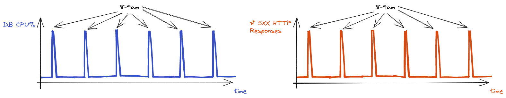

I was recently diagnosing a high number of 500 errors in a web application built with Flask and found that the frequency of 5XX response codes correlated with a high CPU% usage on the postgres database that the flask app connected to.
Digging into the logs of the flask app there were a bunch of errors from psycopg2: a python package for talking to the postgres database:
sqlalchemy.exc.OperationalError: (psycopg2.OperationalError) SSL SYSCALL error: EOF detected
[
<SELECT user.id, user.name...
REST OF SQL QUERY HERE
...
>
]
So naturally, I first checked if a SSL SYSCALL error was a common enough issue to show up on search and found some clues as to what might be happening here. Other developers had run into this error and it ranged from seeing it during long running/slow queries, low resources or locked tables.
This matched the observation of high DB CPU% utilisation that we saw on our app so the next step was figuring out what was causing this.

1 Finding the problematic query
I was fairly confident that we had plenty of resources to handle “normal” load on our database since you can see the spikes at 8-9am were much higher than usual load - so there must’ve been something strange happening in the morning that doesn’t happen during the rest of the day.
It wasn’t unusual to see high traffic in the morning when users are waking up and logging into the website as one of their first activities of the day - but logging in didn’t require use of a particularly intensive query - especially compared to the “heavier” analytical queries we had for complex analyses of large datasets. Regardless, it was still worth looking into this even just to rule out this possibility, especially given that the error did show a query that looked like it was selecting from the users table - suspiciously similar to a query you’d run while logging a user in!
1.1 Digging into Flask-security
One of the great things about Flask is its ecosystem of extensions that allow you to quickly integrate common features into your application. In this case, the Flask-Security extension (which itself is a combination of other Flask extensions) enables integration of common security mechanisms such as various types of authentication, user registration and sign in.
The extension implements a /login endpoint which renders a login form that runs a query against a datastore (in this case a postgres db) when submitted by the user. The login form class inherits from a Flask-WTF BaseForm class and implements a validate method to login the user:
# https://github.com/mattupstate/flask-security/blob/master/flask_security/forms.py#L206
class LoginForm(Form, NextFormMixin):
"""The default login form"""
email = StringField(get_form_field_label('email'),
validators=[Required(message='EMAIL_NOT_PROVIDED')])
password = PasswordField(get_form_field_label('password'),
validators=[password_required])
remember = BooleanField(get_form_field_label('remember_me'))
submit = SubmitField(get_form_field_label('login'))
def __init__(self, *args, **kwargs):
...
def validate(self):
...
self.user = _datastore.get_user(self.email.data)
...The datastore is an instance of a SQLAlchemyUserDataStore which is responsible for running the query:
# https://github.com/mattupstate/flask-security/blob/674b18103fa8734aca71bbd084ea01e3709817ef/flask_security/datastore.py#L227
class SQLAlchemyUserDatastore(SQLAlchemyDatastore, UserDatastore):
"""A SQLAlchemy datastore implementation for Flask-Security that assumes the
use of the Flask-SQLAlchemy extension.
"""
def __init__(self, db, user_model, role_model):
SQLAlchemyDatastore.__init__(self, db)
UserDatastore.__init__(self, user_model, role_model)
def get_user(self, identifier):
from sqlalchemy import func as alchemyFn
if self._is_numeric(identifier):
return self.user_model.query.get(identifier)
for attr in get_identity_attributes():
query = alchemyFn.lower(getattr(self.user_model, attr)) \
== alchemyFn.lower(identifier)
rv = self.user_model.query.filter(query).first()
if rv is not None:
return rvThe user model that was passed in to the constructor to instantiate this datastore during the flask application setup:
class User(db.Model, UserMixin):
id = db.Column(db.Integer, primary_key=True)
email = db.Column(db.String(255), unique=True)
password = db.Column(db.String(255))
active = db.Column(db.Boolean())
confirmed_at = db.Column(db.DateTime())
roles = db.relationship(
"Role",
secondary=roles_users,
backref=db.backref("users", lazy="dynamic"),
)In order of execution:
- requests received for a protected page
- redirect to the login page with a
LoginForm - user enters credentials and the form is submitted
- run
.validate()on theLoginForm - run
_datastore.get_user()to fetch the user model SQLAlchemyUserDatastoreruns a query against the database
1.2 Compiling ORM Queries
At this point we still don’t have a SQL query that we can analyse because in step 6 the query is abstracted away through an ORM: SQLALchemy creates the query for us and maps it to an User model object:
# https://github.com/mattupstate/flask-security/blob/674b18103fa8734aca71bbd084ea01e3709817ef/flask_security/datastore.py#L245
# in this case attr = email
query = alchemyFn.lower(getattr(self.user_model, attr)) \
== alchemyFn.lower(identifier)
rv = self.user_model.query.filter(query).first()Luckily we can stringify sqlachemy queries to generate the corresponding SQL query:
print(self.user_model.query.filter(query))SELECT
"user".id AS user_id,
"user".email AS user_email,
"user".password AS user_password,
"user".active AS user_active,
"user".confirmed_at AS user_confirmed_at
FROM
"user"
WHERE
lower("user".email) = lower(%(lower_1)s)2 Analysing the query execution plan
Now that we have a concrete query to work with, we can learn a bit about the execution plan that the PostgresSQL planner generates to see if we can spot anything unusual.
EXPLAIN ANALYZE
SELECT
"user".id AS user_id,
"user".email AS user_email,
"user".password AS user_password,
"user".active AS user_active,
"user".confirmed_at AS user_confirmed_at
FROM
"user"
WHERE
lower("user".email) = lower('test@email.com')| QUERY PLAN |
|---|
| Seq Scan on “user” (cost=0.00..2226.01 rows=500 width=32) (actual time=22.078..22.079 rows=0 loops=1) |
| Filter: (lower((email)::text) = ‘test@email.com’::text) |
| Rows Removed by Filter: 100001 |
| Planning Time: 0.106 ms |
| Execution Time: 22.093 ms |
The first thing that sticks out here is that we are using a sequential scan so this will not scale well as the number of users grows larger - since all the rows will be scanned sequentially (as the name implies). I assumed the query planner would pick index scan instead since we have a unique constraint in our model for user emails which created an index in our database:
SELECT
indexname,
indexdef
FROM
pg_indexes
WHERE
schemaname = 'public' AND
tablename = 'user'| indexname | indexdef |
|---|---|
| user_pkey | CREATE UNIQUE INDEX user_pkey ON public.”user” USING btree (id) |
| user_email_key | CREATE UNIQUE INDEX user_email_key ON public.”user” USING btree (email) |
However if we look closely at our query we can see that we use the lower() function on our email before running the query so it can’t use the user_email_key index:
...
WHERE lower("user".email) = lower("test@email.com")
...We can test this out by removing the lower function and check if it uses the index:
EXPLAIN ANALYZE
SELECT
"user".id AS user_id,
"user".email AS user_email,
"user".password AS user_password,
"user".active AS user_active,
"user".confirmed_at AS user_confirmed_at
FROM
"user"
WHERE
"user".email = 'test@email.com'Bingo! As expected we use the index scan here so the lower() was indeed causing a problem:
| QUERY PLAN |
|---|
| Index Scan using user_email_key on “user” (cost=0.42..8.44 rows=1 width=32) (actual time=0.025..0.026 rows=0 loops=1) |
| Index Cond: ((email)::text = ‘test@email.com’::text) |
| Planning Time: 0.161 ms |
| Execution Time: 0.053 ms |
3 Functional indexes
Now that we have found the cause, we can speed up this query with an index to solve this in a few ways: 1. change the query so it is case sensitive (i.e. remove the lower call) and ensure all email entries in the database are in lower case so we can use the existing user_email_key index 2. add a functional index
The first option would require us to change all exisiting emails in the database to lower case and add some validation or preprocessing of the email string during registration to ensure only lowercase emails are added which is more invasive than the second option.
Postgres supports the use of functional indexes so we can define an index on the result of a function applied to a column:
CREATE INDEX user_email_lower ON public."user" using btree (lower(email))We can then run the case insensitive query again with the lower() call: we can see the new user_email_lower index is used!
| QUERY PLAN |
|---|
| Index Scan using user_email_lower on “user” (cost=0.42..8.44 rows=1 width=30) (actual time=0.033..0.034 rows=0 loops=1) |
| Index Cond: (lower((email)::text) = ‘test@email.com’::text) |
| Planning Time: 1.517 ms |
| Execution Time: 0.215 ms |
The total cost is reduced from 2226.01 to 8.44: a 263% increase! *(The first number is the startup cost of the query, this is expected to be lower for sequential scan since it can just start reading from the first row whereas for index scan it will have to read from the index before it can start reading the first row.)
4 Local load testing
So we’ve figured out the root cause of the problem and now can be quite confident that the issue is solved. However the real issue facing users wasn’t necessarily a slow query - it was a slow/unresponsive website in the morning when they were trying to login.
4.1 Reproducing a minimal example
To test the solution end to end (before deploying to staging/test environments) we can reproduce this scenario with a minimal example of a flask-security app backed by a postgres database. You can find the full demo example in the repo here which lets you spin this up with a single docker compose command.
4.2 Load testing
We can swarm our system with thousands of users using locust to simulate load on our database during the morning rush to login. I defined a test that sends a post request to the /login endpoint and ramped up the users to 100,000 to first see the effect on our CPU usage and response times. The container was limited to 1 CPU with 50M of ram (see docker-compose.yml for full details).
4.2.1 CPU Usage
First I wanted to reproduce the high CPU usage on the database instance seen in production locally, so the database was seeded with 1000 users and the cpu utilisation on the database was recorded with
docker stats4.3 Response times
The most impactful thing is how long it takes for users to log in and start using the app, so it was important to make sure that the high DB CPU% was actually having an impact on response times. The data from our load testing in locust correlated pretty well with the results above:
I couldn’t find an easy way to extract raw data points from locust (only images of the charts), but I found that the datapoints are available in the webpage via a stats_history javascript variable so you can copy the return value into a json file after running:
// run this in the console of the locust webpage (i.e. localhost:8089 when locust is running)
JSON.stringify(stats_history)For me this is the most impactful metric, creating a functional index that the login request can use has a dramatic drop in response times: from a peak of 21 seconds to 18ms: a whopping 1167x faster!
5 Limitations
It’s pretty well known that indexes improve performance of queries that read data but as with every design decision there are trade-offs.
5.1 Storage
Indexes aren’t free: they do take up space, in this case where we had 1000 users the index was ~3MB which isn’t much in the context of database storage but for tables with a lot of data or systems with more stringent storage constraints this could be impactful.
5.2 Write speed
In postgres the default index type is a btree which may need to be rebalanced by recursively splitting nodes if there’s no more room for a new key in the tree node (this article explains why this is so expensive).
I couldn’t find any documentation on if a functional index would be more expensive than a normal one - but theoretically it seems like it would be: since we’d have to run the function on every insert although it could be insignificant compared to other things like rebalancing.